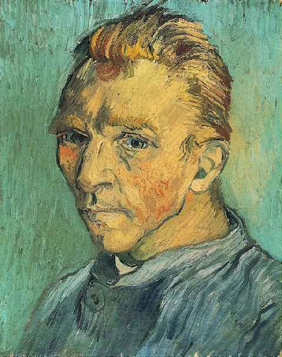
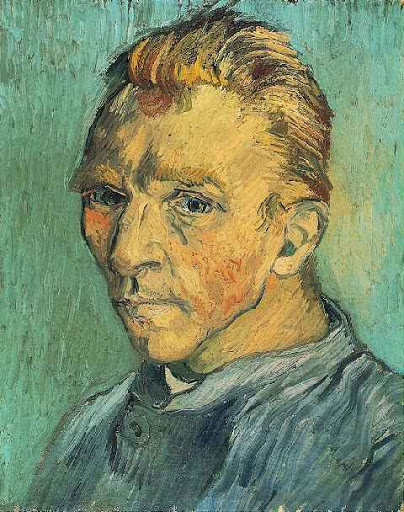
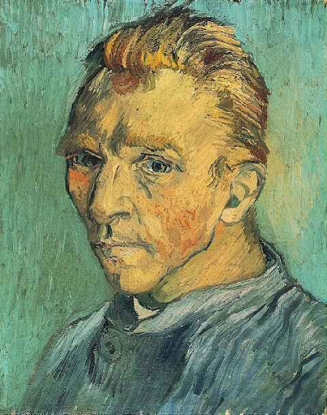

Сайт посвещённый творчеству и жизни Винсента Ван Гога
P.s в основном лишь на моём вкусе
 

P.s в основном лишь на моём вкусе

Винсент Ван Гог родился в голландском городе Гроот-Зундерте 30 марта 1853 года. Ван гог был первым ребенком в семье (не считая родившегося мертвым брата). Отца звали Теодор Ван Гог, мать - Карнелией. Семья была у них большая: 2 сына и три дочери. В роду Ван Гога все мужчины, так или иначе имели дело с картинами, либо служили церкви. Уже к 1869 году, даже не закончив школу, он стал работать в фирме, которая продавала картины. По правде говоря, у Ван Гога не получалось хорошо продавать картины, но зато он обладал безграничной любовью к живописи, а также ему хорошо давались языки. В 1873 году, в 20-летнем возрасте, он попал в Лондон, где провел 2 года, которые изменили всю его жизнь.
В Лондоне Ван Гог жил припеваючи. У него было весьма хорошее жалование, которого хватало на посещение различных картинных галерей и музеев. Он даже купил себе цилиндр, без которого просто нельзя было обойтись в Лондоне. Все шло к тому, что Ван Гог мог бы стать преуспевающим торговцем, но ...как это часто бывает, на пути его карьеры стала любовь, да, именно любовь. Ван Гог до беспамятства влюбился в дочку своей квартирной хозяйки, но узнав что она уже обручена, очень замкнулся в себе, стал безразлично относится к своей работе. Когда он вернулся в Париж его уволили.
В 1877 году Ван Гог стал снова жить в Голландии, и все больше находил утешение в религии. После переезда в Амстердам он начал учиться на священника, но вскоре бросил учебу, так как обстановка на факультете его не устраивала.В 1886 году в начале марта Ван Гог переезжает в Париж к совему брату Тео, и живет у него на квартире. Там он берет уроки живописи у Фернана Кормона, и знакомится с такими личностями как Писсаро, Гоген и многими другими художниками. Очень быстро он забывает весь мрак голландской жизни, и быстро завоевывает уважение как художник. Рисует четко, ярко в стиле импрессионизма и постимпрессионизма.
Винсент Ван Гог, проведя 3 месяца в евангелисткой школе, которая находилась в Брюсселе, стал проповедником. Он раздавал деньги и одежду, нуждающимся беднякам, хотя сам не был достаточно обеспеченным. Это вызвало подозрение у начальства церкви, и его деятельность была запрещена. Он не унывал, и находил утешение в рисовании.
К 27-ми годам, Ван Гог понял в чем его призвание в этой жизни, и решил что должен во что бы то ни стало стать художником. Хоть Ван Гог и брал уроки рисования, но его можно с уверенностью считать самоучкой, потому что он сам штудировал многие книги, самоучители, срисовывал картины известных художников. Сначалу он думал стать иллюстратором, но затем, когда брал уроки у своего родственника-художника - Антона Моуве, написал свои первые работы маслом.
Вроде бы жизнь стала налаживаться, но снова Ван Гога начали преследовать неудачи, причем любовные. Его кузина Кея Вос стала вдовой. Она ему очень нравилась, но он получил отказ, который долго переживал. К тому же из-за Кеи он поссорился очень серьезно со своим отцом. Эта размолвка была причиной переезда Винсента в Гаагу. Именно там он знакомится с Клазиной Марией Хоорник, которая была девушкой легкого поведения. С ней Ван Гог прожил почти год, причем неоднократно ему приходилось лечиться от венерологических заболеваний. Он хотел спасти эту бедную женщину, и даже думал жениться на ней. Но тут уже вмешалась его семья, и мысли о браке были попросту развеяны.
Вернувшись на родину к родителям, которые к тому времени уже переехали в Нёнен, его мастерство стало совершенствоваться. Он провел на родине 2 года. В 1885 Винсент поселился в Антверпене, где посещал занятия в Академии искусств. Затем, в 1886 году, Ван Гог снова возвращается в Париж, к своему брату Тео, который на протяжении всей жизни помогал ему, как морально так и финансово. Франция стала вторым домом для Ван Гога. Именно в ней он и прожил всю свою оставшуюся жизнь. Он не чувствовал себя тут чужим. Ван Гог много пил, и имел очень взрывной характер. Его можно было назвать человеком, с которым трудно иметь дело.
В 1888 он перебрался в Арль. Местные жители были не рады видеть его в своем городке, который находился на юге Франции. Не смотря на это Винсент нашел здесь друзей, и чувствовал себя вполне хорошо. Со временем ему пришла мысль создать здесь поселение для художников, чем он и поделился со своим другом Гогеном. Все шло хорошо, но между художниками произошла размолвка. Проведя 2 недели в психиатрической клинике он снова вернулся туда в 1889 году, так как его стали мучать галлюцинации.
В мае 1890 году он окончательно покинул приют для душевно больных и отправился в Париж к своему брату Тео и его жене, которая только родила мальчика, которого назвали Винсентом в честь его дяди. Жизнь стала налаживаться, и Ван Гог был даже счастлив, но его болезнь вернулась снова. 27 июля 1890 года Винсент Ван Гог скончался на руках своего брата Тео, который очень его любил. Спустя пол года умер и Тео. Братья похоронены на кладбище Овера рядом.Но Ван Гог относился к своей судьбе довольно невозмутимо. «Общество ночных горшков палаты номер шесть» не сильно его беспокоило, ведь симпатии художника всегда были на стороне бедняков. На лечение ушло шесть недель, а это слишком мало для лечения гонореи. И правда, Винсент чувствовал себя достаточно плохо, но продолжал работать. Ремесло живописца все больше истощало его силы, но он с головой ушел в творчество, понимая, что у него не так много времени на завершение работы. Выздоровление могло быть более успешным, если бы им не занялись неподходящие врачи.
После пребывания в Гаагской больнице Винсент писал с трудолюбием одержимого. Он переехал в Арль, небольшой городок во Франции, чтобы найти там «голубые и радостные краски юга». Меньше чем за полтора года он создал около двухсот полотен. И тем не менее Винсент оставался непризнанным; порой его охватывала сильная депрессия, и он пил в неумереном количестве. 23 декабря 1888 года в арльском борделе он передал одной из девиц кусок своего левого уха со словами: «Тщательно храните этот предмет». До сих пор неясно, что тогда произошло: изуродовал ли Винсент себя сам, или это случилось при неудачной попытке самоубийства, или это его собутыльник и собрат по искусству Гоген в порыве ярости схватился за нож. В любом случае, Винсент устроил форменный переполох, явившись в публичный дом с половинкой своего уха в руках. Полиция нагрянула к нему домой — там все было в крови. Сам художник лежал на постели, завернувшись в простыню, и был как мертвый. Его перевезли в местную больницу. Там Винсент довольно быстро выздоровел как телесно, так и душевно, так что через несколько недель его можно было выписывать. В конце января 1889 года он отмечал: «Я сам удивляюсь, когда сравниваю свое нынешнее состояние с тем, которое было месяц назад».
Но Арль уже не мог его терпеть. Для местной буржуазии он всегда был оскорбителем общественного спокойствия. Теперь же, после скандала в борделе, этого человека с огненно-рыжими волосами и перевязанным ухом, в заношенном пальто и испачканных краской брюках начали бояться. Горожане требовали, чтобы «умалишенный голландец» исчез. Поэтому 8 мая 1889 года его поместили в психиатрическую больницу города Сен-Реми.
Психиатрическая клиника представляла собой тихое местечко, а заведующим в ней был доктор Теофиль Пейрон, морской врач и окулист. Пейрон, маленький плотный мужчина, страдал от подагры. У него не было ни достаточной квалификации, ни убедительной мотивации для лечения Винсента. Он обнаружил у Ван Гога эпилепсию, а в качестве лечения назначил проверенный еще в бытность его морским врачом способ: дважды в неделю двухчасовое (!) купание. После одной из редких прогулок для рисования Винсент так ослабел, что три недели не выходил из палаты. В какой-то момент он сделал попытку выпить склянку со скипидаром, в связи с чем Пейрон окончательно запретил Винсенту рисовать. С тех пор он лежал в полузабытьи в своей комнате.
Позже, в феврале 1890 года, произошел неожиданный для всех и для самого художника поворот. Брат Тео написал ему, что некий известный критик обратил внимание на работы Винсента и назвал его «великим художником». Оценка его творчества достигла апогея в словах: «Этот истинный художник со сверхчувствительностью истеричной женщины, с душой гения». Сам гений, во всяком случае, на этот чрезмерный восторг отреагировал весьма скупо. Даже когда одна из его картин была куплена за четыреста франков — приличную по тем временам цену — он оставался все так же безучастен. И все же неожиданный приток денег и новая слава позволили ему покинуть Сен Реми. Доктор Пейрон пытался его удержать, даже имел с ним разговор, чего прежде никогда не делал, — но Винсент оставался равнодушен. Когда он выписывался, он оставил больнице около пятидесяти картин. Пейрон использовал их в качестве мишеней, стреляя по ним из охотничьих ружей.
Тем временем его бывший пациент отправился в Ове, маленький городок к северо-востоку от Парижа. К нему вновь вернулась творческая одержимость. В течение семидесяти дней он написал восемьдесят картин, часть из которых пришлось хранить в хлеву. Он постоянно искал новые мотивы и модели и в этом поиске набрел на доктора Поля Гаше, прославившегося в качестве выдающегося медика и ценителя искусства. Гаше проработал некоторое время в психиатрической клинике, а после защиты докторской диссертации, посвященной исследованию меланхолии, открыл собственную практику в Париже. Он был приверженцем тогда еще молодой гомеопатии и энергичным противником традиционных методов лечения, таких как назначение слабительного или кровопускание. Кроме того, он был деятельным социалистом, бесплатно работавшим в парижской клинике для бедных, и с удовольствием посещал художественные кафе. Список его пациентов также свидетельствует об интересе к искусству. Гаше заботился о семье художника Камилля Писарро, о его товарищах — Поле Сезанне, Огюсте Ренуаре и Эдуарде Мане. Последнего он отговаривал от ампутации ноги, но тот не последовал совету — и умер через десять дней после операции. К известнейшим психиатрическим пациентам Гаше принадлежал также гравер Шарль Мерион.
Итак, Гаше обладал знаниями в области психиатрии и был открыт новым, альтернативным способам лечения — достаточное основание для Винсента Ван Гога, чтобы увидеть в этой встрече божественный промысел.
Но довольно скоро он понял, что от Гаше не стоит ждать действенной помощи. Тот ограничивался тактикой успокоения и расстройству Винсента пытался дать весьма наивные объяснения. Например, он обвинял солнце, которое во время занятий ландшафтной живописью слишком долго грело голову светлокожего художника, что привело к попытке отравиться скипидаром. Его не очень беспокоило то, что Винсент к этому времени уже давно потерял контроль над собой и эксцесс со скипидаром был не причиной, а следствием его проблем со здоровьем.
Возможно, и с самим врачом было не все в порядке. Винсент, остроумнейший наблюдатель, приписывал ему «лицо, оцепеневшее от забот» и «нервическое заболевание». Ван Гог заключал: «Он кажется еще менее здоровым, чем я, или, по крайней мере, столь же больным». Художник создал два портрета Гаше, в которых несравненно точно передал всю депрессивность облика последнего. Одна из этих картин была куплена в 1990 году за 82,5 миллиона долларов. Никому не известно, где она сейчас.
Чем чаще встречался Ван Гог с доктором Гаше, тем больше усиливался его скепсис. Как нервнобольной врач мог вылечить нервнобольного пациента? В одном из писем брату Тео он с сарказмом спрашивает: «Если слепой поведет слепого, не упадут ли они оба в яму?» И ниже: «С доктором Гаше нельзя считаться ни в коей мере»